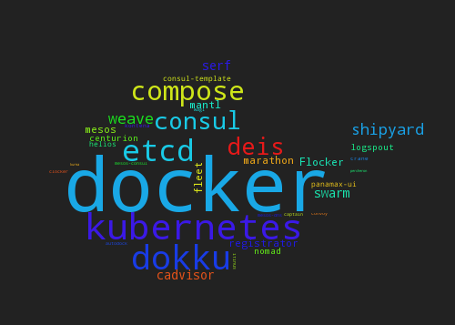
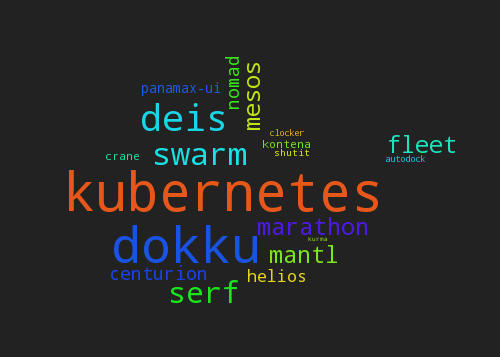

Mesos-Marathon cloud
for developers
Jan Seidl <seidl@avast.com>, VirusLab Systems
Docker?
Cloud?
Cloud of docker tooling

Cloud of docker orchestration tooling

Cloud?
swarm / helios / kubernetes (beta) / mesos-marathon
Mesos-Marathon cloud
mmcloud v4 (current)
- mesos
- marathon
- (zookeeper)
- marathon-lb
- logstash
pluses
- immediate propagation
- name(s) (vhost(s))
- HTTP/TCP
- support multiport application
minuses
HA
virtual IP + VRRP
- keepalived
- piranha (RedHat)
- ultramonkey
- DCOS?